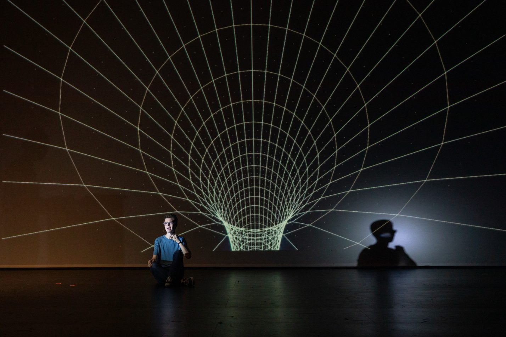
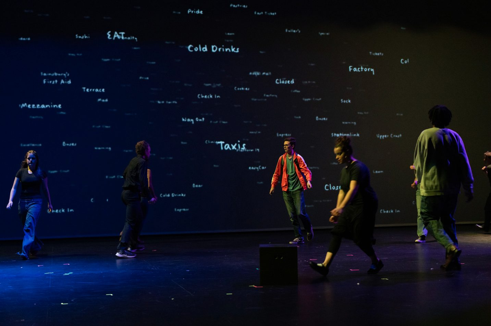
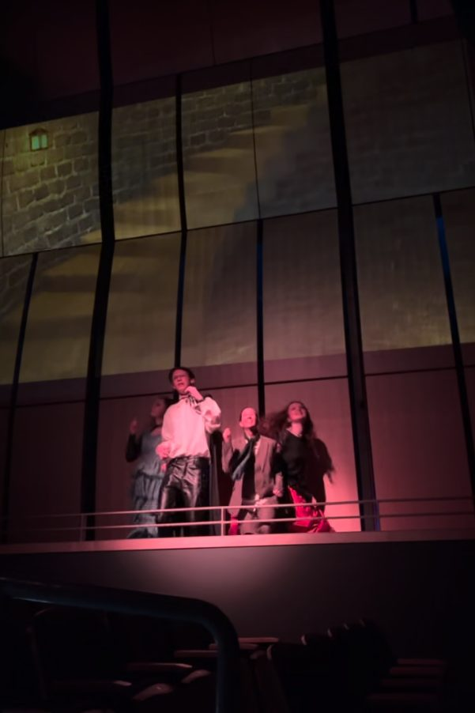

Stage projections
I designed projected backdrops for five high school productions, and posters for two more. Each one was drawn in Illustrator and animated in After Effects.
- Project
- Projection design
- Ref
- JY-01
- Years
- 20__–20__
- Role
- Projection designer
- Tools
- Adobe Illustrator, After Effects
- Productions
- 5 shows, plus posters for 2 more
- Status
- All shows closed.
ShowtitleyearCue no.

A wireframe funnel across the full back wall. The performer sits in front of it, and their shadow lands on the grid. what this moment was for
ShowtitleyearCue no.

Station and shop signs in handwriting scattered across the backdrop: Taxis, Cold Drinks, Check In, Way Out. how it moved
ShowtitleyearCue no.

A stone wall with one lit window, projected behind performers on the upper level.
Next
Add a screen recording or an After Effects export here.
A 10-second loop of one cue says more than a still.
A 10-second loop of one cue says more than a still.